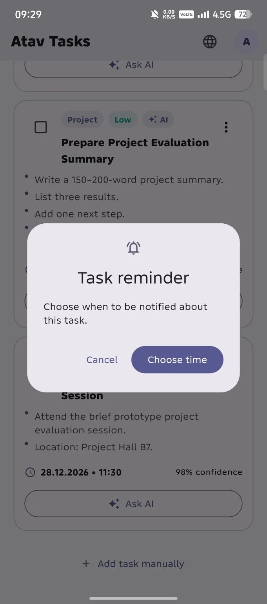

Select
Choose an image, PDF or supported document—or review an actionable Gmail suggestion.
Working Android MVP
Atav Tasks is an AI-powered task management app that finds actionable work hidden in busy emails, PDFs, documents and images—then turns it into small, focused task cards.
Built first for students and academics who need a clearer way to manage deadlines, documents and inboxes.


How it works
Atav Tasks turns a dense source into a clear workflow without asking users to manually rewrite every action and date.
Choose an image, PDF or supported document—or review an actionable Gmail suggestion.
AI identifies the task, useful context and relevant dates through the secure backend.
Keep control: inspect, edit, approve or reject the suggested task before it joins your list.
Track the task, set a reminder and ask AI to explain the next steps in simpler language.
Current product
These are real screens from the current Android MVP—not concept mockups.
Instead of leaving actions buried inside a document or image, Atav Tasks extracts the useful details and presents them as small, reviewable cards.
AI can explain what a task means, break it into smaller completion steps and show progress—giving students a simpler starting point when a task feels unclear or overwhelming.

Task reminders help users stay aware of approaching work without turning the experience into another noisy feed.

Gmail-assisted workflow
Atav Tasks identifies actionable information from permitted Gmail messages and presents it as a suggestion. The user remains in control and approves or rejects it before a task is saved.
In early conversations with students and academics, Gmail analysis received the strongest interest.
MVP status: available and continuing through reliability validation.

Why Atav Tasks
Academics told us they can get lost among high volumes of incoming email and shared files. They believe a product that surfaces the actions inside that information could make their work considerably easier.
Students can miss assignment deadlines, exam dates and approaching project milestones. Atav Tasks uses AI to simplify the work step by step—and remind students that they do not have to face every task alone.
These observations are qualitative feedback from early conversations, not statistical research or claimed traction.
Our vision — AI Task Coach
Atav Tasks already extracts tasks from images and documents, detects dates, creates task cards and helps users track their work. The next layer is a more context-aware AI task coach.
It will revisit an extracted task—and, when needed, its source context—to explain how the work can be completed step by step. Luna is designed to evolve from an analysis layer into a practical coach that helps users understand, plan and finish their tasks.
We also aim to develop natural reminders, encouraging messages and progress-focused suggestions that match each task and deadline. This broader coaching experience is still in development and is not presented as a completed feature.
Built with care
The Android MVP uses Flutter, Firebase and server-side OpenAI technology. API credentials remain on the server and are not shipped inside the public website.
This website itself is static: it uses no account system, no advertising trackers and no API keys.
Founder
Founder & Developer
Independent founder and developer of the working Atav Tasks Android MVP, built with Flutter, Firebase and server-side OpenAI technology.
Atav Tasks
We are building a clearer AI-powered task experience for students and academics.
alperatav@gmail.com